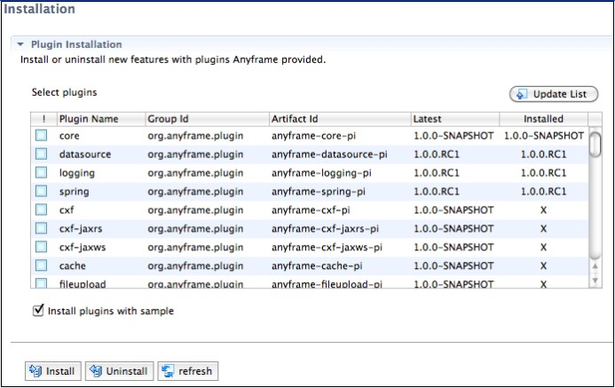
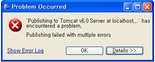

Anyframe Plugin Installation
Anyframe에서 제공하는 Plugin에 대해 Install/Uninstall 등을 하기 위해서 사용한다.
Web 타입 프로젝트에서는 Plugin을 설치하면 Plugin과 연관된 라이브러리와 샘플을 함께 설치 할 수 있으며,
Service 타입 프로젝트에서는 Plugin을 설치할 경우 라이브러리만 설치할 수 있다.
- 프로젝트를 선택한 후 우 클릭 >> Anyframe Tools >> Anyframe IDE 메뉴를 선택한다.
- Anyframe IDE Editor에서 Installation Tab을 선택하면 다음과 같은 화면이 보인다.
- Update List: Remote Anyframe Repository로 부터 Anyframe Plugin 목록 파일을 update 받는 기능이 수행됨.
default로 update 된 파일(plugin-catalog-X.X.X.xml) 은 Ant 프로젝트일 경우 [Anyframe 을 설치한 root 폴더 경로]/repo/ 에 존재하게 되고,
Maven 프로젝트일 경우 [Local repository 경로] 에 존재하게 됨.
- !: Install/Uninstall 할 대상을 체크하는 부분으로 여러 개의 Plugin을 선태하여 함께 Install하거나 Uninstall할 수 있다.
- Plugin Name: Plugin 명
- Group Id: Plugin Library의 Group 명
- Artifact Id: Plugin Library 명
- Latest: Plugin의 최신 버전
- Installed: Plugin이 설치되었다면 설치된 Plugin의 버전을 표시하고 설치되어 있지 않은 경우 X로 표시
- Install plugins with sample: 샘플코드를 라이브러리와 함께 설치하고 싶은 경우 체크박스에 체크하며, Service 타입 프로젝트에서는 비활성화 된다.

- 설치 또는 제거, 업데이트 할 Plugin 항목을 체크한 후, Install 혹은 Uninstall 버튼을 클릭한다.
이때, tomcat은 stop 시킨 상태에서 수행하도록 한다. 그렇지 않은 경우, 동작은 정상적으로 수행되나, 아래 4번 내용과 같은 에러가 발생하게 된다.
또한, 샘플 프로젝트를 대상으로 설치된 Plugin들을 삭제할 때, Essential Plugin들(Core, Datasource, Logging, Spring)은 삭제할 수 없으며,
특정 Plugin 삭제를 요청한 경우 삭제 대상 Plugin명을 가진 모든 폴더 및 파일들이 해당 프로젝트로부터 제거된다.
단, 제거된 내용은 프로젝트 하위의 uninstalled 폴더 내에 백업되므로 필요한 파일의 경우 다시 가져오도록 한다.
- Install : Installed 항목에서 설치된 버전으로 표시가 되며, 다음과 같은 방법으로 확인할 수 있다.
Web 타입 프로젝트에서 해당 Plugin과 샘플이 함께 설치된 경우, 적용된 Plugin 샘플은 프로젝트를 실행시켜봄으로써 확인할 수 있다.
샘플 실행방법은 New Project Creation 실행방법 내용을 참조한다.
- metadata 정보확인: 프로젝트 폴더 >> META-INF 폴더>> plugin-installed.xml 파일에 list로 관리
설치한 Plugin에 대한 정보가 다음과 같은 형태로 추가 된다.
<plugins>
<plugin name="core">
<groupId>org.anyframe.plugin</groupId>
<artifactId>anyframe-core-pi</artifactId>
<version>1.0.0</version>
<essential>true</essential>
</plugin>
</plugins>
|
- Ant 프로젝트
- Web 타입: 프로젝트 Web App Libraries에 라이브러리 추가
- Service 타입: [프로젝트 Home]/lib에 라이브러리 추가되고, .classpath에 클래스패스가 추가됨
중략...
<classpathentry kind="lib" path="lib/anyframe-hibernate-5.0.0.jar"/>
<classpathentry kind="lib" path="lib/spring-orm-3.0.5.RELEASE.jar"/>
<classpathentry kind="lib" path="lib/antlr-2.7.7.jar"/>
<classpathentry kind="lib" path="lib/xstream-1.3.jar"/>
<classpathentry kind="lib" path="lib/dom4j-1.6.1.jar"/>
<classpathentry kind="lib" path="lib/adapter-core-1.2.jar"/>
<classpathentry kind="lib" path="lib/hibernate-util-1.2.jar"/>
<classpathentry kind="lib" path="lib/javassist-3.8.0.GA.jar"/>
<classpathentry kind="lib" path="lib/jboss-serialization-1.0.1.GA.jar"/>
<classpathentry kind="lib" path="lib/beanlib-5.0.1beta.jar"/>
<classpathentry kind="lib" path="lib/beanlib-hibernate-5.0.1beta.jar"/>
<classpathentry kind="lib" path="lib/ehcache-2.2.0.jar"/>
<classpathentry kind="lib" path="lib/hibernate-3.6.0-Final.jar"/>
<classpathentry kind="lib" path="lib/trove-1.0.2.jar"/>
|
- Maven 프로젝트 : 설치한 Plugin과 관련된 라이브러리 정보가 pom.xml 의 <dependency>에 추가됨
- Uninstall : Installed 항목에서 X표시가 되며, 다음과 같은 방법으로 확인 할 수 있다.
- metadata 정보확인: 프로젝트 폴더 >> META-INF 폴더>> plugin-installed.xml 파일에 list로 관리
해당 plugin 정보가 삭제된다.
- Ant 프로젝트
- Web 타입: 프로젝트 Web App Libraries에 라이브러리 삭제
- Service 타입: [프로젝트 Home]/lib에 라이브러리 삭제되고, .classpath에 클래스패스가 삭제됨
- Maven 프로젝트 : 삭제한 Plugin과 관련된 라이브러리 정보가 pom.xml 의 <dependency>에 삭제됨
- Plugin Install/Uninstall 시에 다음 그림과 같은 메시지가 뜨는 경우는 tomcat이 실행된 상태에서 tomcat이 인식하고 있는 파일에 변경이 있는 경우에 발생하는 것이다.
아래와 같은 메시지는 Plugin Install/Uninstall 전에 tomcat 동작을 stop 시킬 경우에는 뜨지 않는다.

[참고 사항]
위에서 설명한 기능 수행 도중에는 프로젝트 생성, 코드 생성 및 DB 변경 등과 같은 Anyframe IDE의 기능을 동시에 수행시킬 수 없으므로 유의하도록 한다.
(Background 실행을 통한 기능 수행 시) |
|